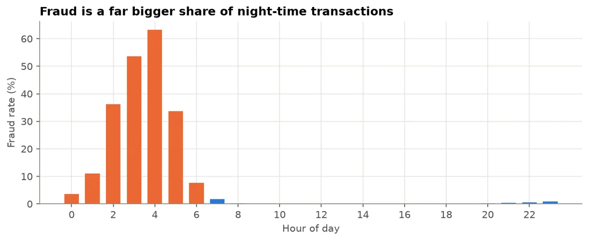
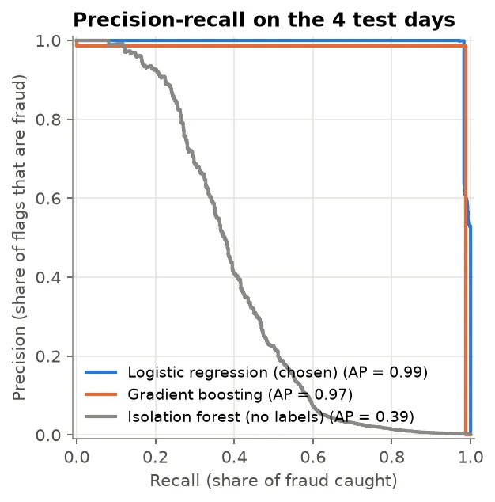
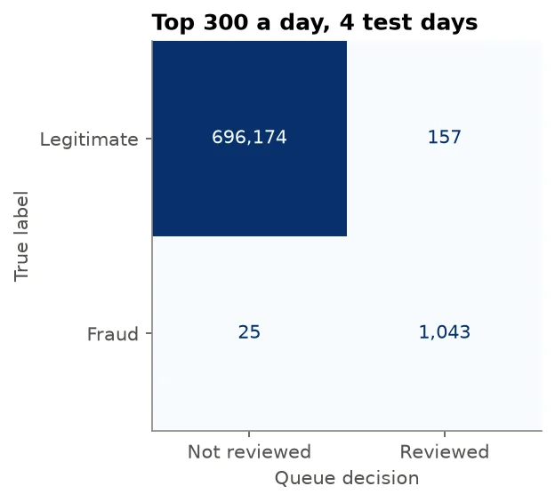

Fraud detection · Case study
Fraud Detection: A Daily Review Queue for Mobile Money
A fraud model that hands a mobile money fraud team its daily review queue, sized to how many cases six analysts can actually check, built on 2.6 million simulated transactions.
- 98%of fraud cases caught (89% of the money)
- 87%of flagged transactions are genuine fraud
- 300reviews a day, matching team capacity
- Data
- PaySim, a simulated mobile money log calibrated on real transactions (14 normal-volume days)
- Methods
- Weighted logistic regression, isolation forest, gradient boosting, PR AUC, capacity threshold
- Tools
- Python, pandas, scikit-learn, imbalanced-learn
The problem
The imagined client is a South African mobile money provider whose fraud team reviews suspicious transactions by hand. A missed fraud costs the full amount stolen; a false alarm costs about R60 of analyst time, but too many false alarms teach analysts to ignore the queue.
Question: which transactions should the team review each day to catch most fraud without drowning in false alarms? With six analysts reviewing about 50 cases each, capacity, not a 0.5 probability, sets the threshold.
What the data shows
- Fraud is extremely rare: 0.13% of transactions, so predicting “no fraud” is 99.87% accurate and catches nothing.
- Fraud only happens in transfers and cash-outs, so only those are scored.
- Fraud has a signature: in 98% of cases the amount is the account's entire balance, and fraud is far more common at night.
- A leaking column: the “after” balances give the answer away (a simulator quirk) and would not exist before approval, so they were removed.
- Simulator quiet days distort the fraud rate, so only the 14 normal-volume days are used.

Approach
- Time-ordered split: 8 days to train, 2 to choose the model, 4 to test, never at random.
- Baselines: “nothing is fraud” (99.85% accurate, 0% recall) and the provider's existing rule (1 flag in 4 days).
- Three models compared on PR AUC, because ROC AUC flatters models on rare events: weighted logistic regression 0.987, gradient boosting 0.984, isolation forest 0.362.
- Simpler won: the logistic regression captures the few strong signals and is the easiest to explain to a fraud manager and an auditor.

Results
On the four unseen test days, each day's 300 highest-scoring transfers and cash-outs went to the team (test PR AUC 0.993):
| Reviews per day | Fraud cases caught | Fraud value caught | Flags that are fraud |
|---|---|---|---|
| 50 | 19% | 55% | 100% |
| 200 | 75% | 87% | 100% |
| 300 | 98% | 89% | 87% |
| 500 | 100% | 100% | 53% |

The misses are informative. One test day had 320 frauds against 300 reviews, a staffing miss no model can fix. Every other miss was a transfer of exactly 10 million (the transaction limit) that did not empty the account: large thefts split into chunks. A one-line rule closes that gap.

Recommendation
- Replace the existing rule with the model-ranked queue: send the top 300 transfers and cash-outs a day to the team.
- Keep the team at about 300 reviews a day; below 250 recall drops quickly, above 300 extra reviews are mostly false alarms.
- Add one rule: review every transfer at the 10 million transaction limit.
- Hold transfers in real time, since fraud moves as a transfer followed by a cash-out.
- On short-staffed days, work the queue from the top: the first 100 reviews are 100% fraud and cover 73% of the value.
Limitations
- Simulated data is far cleaner than reality; real fraudsters adapt, so real precision and recall would be lower. The value is the method: time split, leakage check and a capacity-based threshold.
- No customer history such as device, location or SIM-swap signals.
- Only four test days; a deployed model would be monitored daily and retrained.
Interested in this work?
I'm looking for data scientist and data analyst roles in South Africa or remote.